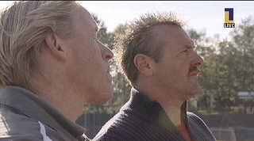
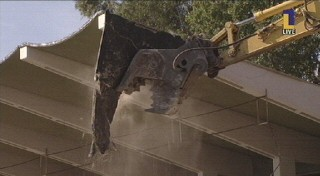
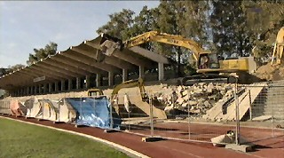
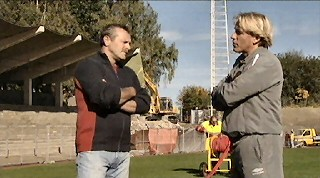

|
Sloop Northside reeds begonnen op
18 oktober 2005
|

Gène Hansen vindt het jammer dat de Northside verdwijnt.
Hij weet nog precies waar zijn ouders stonden. Voor de
gewone mensen, veelal mijnwerkers, knokte hij zich
graag volledig leeg.
Maurice Theelen, de voorzitter van het FP bewaart ook
gouden herinneringen aan deze tribune. Door weer en
wind stonden de mensen bij elkaar, in goede en slechte
tijden. Dit was de sfeertribune.

Eric van der Luer en Gène Hansen halen herinneringen
op. 
Ondertussen knaagt deze machine de Northside stukje
bij beetje af.

De sloop duurt twee weken. Daarna komt hier een
groenvoorziening.

Een leuke anecdote is dat de spelers van de tegenpartij
altijd met angst en beven een hoekschop kwamen
nemen in de hoek bij de Northside....
© Koempels Pleasure Dome
|